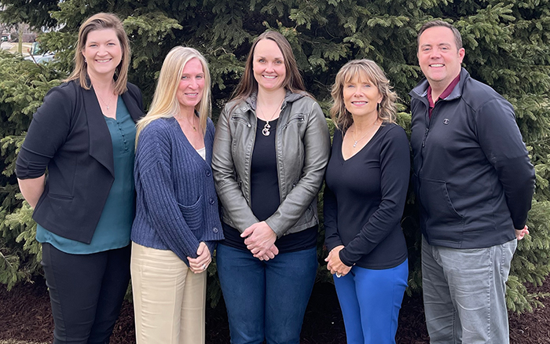
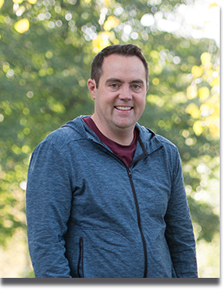
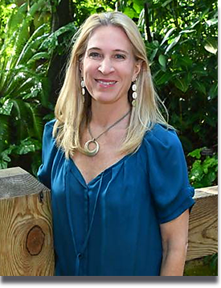
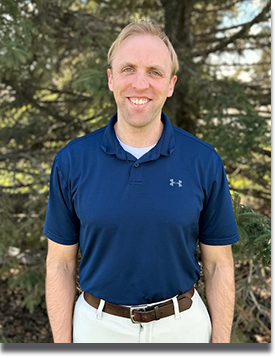

Integrated Physical Therapy (IPT) offers a full continuum of specialized orthopedic physical therapy. We determine and treat the root cause of the injury or pain. Our focus is to normalize a dysfunction with soft tissue, joint and myofascial techniques to regain movement. This creates a good foundation for pain reduction and improved motion. Then we can build the body back, with neuro re-education to begin training muscular balance and movement patterns. We continue adding building blocks with stabilization of core, proper function in extremities, and reducing stresses and pain. IPT therapists are specialized in advanced orthopedic, sports medicine, spine, and manual therapy, with an average of over 20 years of expertise. Our locations are convenient, accessible, and scheduling is prompt with one of our skilled physical therapists.

Dee Aussprung, PT, AT-Ret, CSCS
Dee Aussprung, PT, AT-Ret, CSCS, is a physical therapist, certified strength conditioning specialist, and has been trained as an athletic trainer and has also been trained as a certified orthopedic manual therapist. Dee has specialized in orthopedics, sports medicine, spine and manual physical therapy. She was the first PT in Madison to become certified in the Schroth method, an effective 3-D treatment approach for conservative scoliosis treatment.
Dee has over 39 years of physical therapy experience with treating complex chronic pain conditions related to the spine using advanced manual therapy techniques. Dee is trained in Pilates and also specializes in treating sports injuries, industrial injuries, senior conditions, chronic pain, muscular imbalances, biomechanics, custom orthotics fabrication and rehabilitation after surgery. She enjoys evaluating clients of all ages to find their root cause of injury or dysfunction and treating them with a variety of integrated approaches. She is also a Graston PT provider, using Graston technique to perform instrumented assisted soft tissue mobilization (IASTM) for myofascial, scar tissue, and soft tissue dysfunctions to enhance prompt return to function. Dee enjoys "helping patient's live as painfree as possible."
For many years, Aussprung worked as a physical therapist helping elite and Olympic US Diving athletes for national and international competitions, the 1996 Atlanta Olympics games and the 2004 World Cup Short Track Speed Skating competitions. She taught physical therapy seminars from 1995-2004 and is an adjunct clinical instructor for University of Wisconsin-Madison. Dee served on the Arthritis Foundation Board for 4 years to help those with rheumatoid and degenerative arthritis.
|

|
Kate Langfeldt, DPT, FAAOMPT
Kate completed her Doctorate of Physical Therapy degree from the University of Wisconsin-Madison in 2011. She has extensive experience treating occupational injuries and guiding patients back to work safely. Kate completed a post-doctorate fellowship program in May 2016 through the American Academy of Orthopedic Manual Physical Therapists (AAOMPT). With this advanced training she is able to identify movement dysfunctions, muscle imbalances, and soft tissue and mechanical joint restrictions specific to each patient. She uses a comprehensive approach to treat her patients by applying a variety of manual therapy techniques to improve tissue/joint mobility, followed by neuromuscular re-education techniques to retrain muscles, improve posture, regain function and reduce pain. Kate is certified in the Schroth method, a 3-D treatment approach for conservative management of scoliosis and kyphosis. Kate works with adults and children. She has advanced training with Dry Needling, which is a technique that uses a small thin needle for trigger point release. Kate is also a vestibular rehabilitation specialist and has specialized training in the treatment of vertigo, Benign Paroxysmal Positional Vertigo (BPPV), dizziness and falls prevention.
Kate attended the University of Wisconsin-Whitewater where she graduated with a Bachelor of Science degree. She played four years on the UW-Whitewater volleyball team. Her team won the National Championship in 2005 and she received All-American honors. Volleyball continues to be an important aspect of Kate's life. She currently coaches private and small group volleyball lessons around the Madison area and regularly plays in various tournaments and leagues throughout the United States.
|

|
Brittany Pollentier, MPT, DPT, TPS
Brittany completed her Masters of Physical Therapy at University of Wisconsin – La Crosse in 2006 and her Doctor of Physical Therapy at Temple University in 2009. Her experience includes treating a wide variety of individuals and ages from Pediatrics to Geriatrics. Having advanced training in orthopedics, Brittany particularly enjoys treating patients that have low back, neck, hip and knee pain as well as post surgical total hip and knee replacements. She has advanced training in a variety of manual therapy techniques and has continued her post graduate education thru The Institute of Physical Art. She has also attended extensive training on Dry Needling, which is a technique that uses small thin needles to release trigger points allowing the muscle to return to normal length and function. Dry Needling is part of a comprehensive therapy approach treating pain from conditions such as shoulder, elbow and knee tendonitis, strains, sciatica, headaches to name a few. She is also a Graston PT provider, using Graston technique to perform instrumented assisted soft tissue mobilization (IASTM) for myofascial, scar tissue, and soft tissue dysfunctions to enhance prompt return to function. Combined with other manual therapy techniques, neuromuscular re-education and an individualized home exercise program patients are successful long after they complete a course of physical therapy. Brittany is certified in the Schroth method, a 3-D treatment approach for conservative management of scoliosis and kyphosis. Brittany also has specialization in chronic pain with therapeutic pain specialist program.
Brittany also enjoys treating worker’s compensation injuries and is trained to perform Functional Capacity Evaluations which can become extremely useful in determining an individual’s ability to return to work. Functional Capacity Evaluations determine how much and what movements are safe for each individual to perform and are tailored to a job description or daily activity needs. Outside of being a Physical Therapist, Brittany is a competitive bowler on a national level and coaches junior bowlers. Bowling continues to be a significant part of her and her family’s life.
|

|
Michael Griggs PT, DPT, OCS, FAAOMPT
Michael completed his Doctorate of Physical Therapy (DPT) degree from the University of Illinois at Chicago in 2016 and a post-doctoral fellowship through the Regis University Fellowship in Orthopedic Manual Physical Therapy in 2022. He is a Board-Certified Orthopaedic Clinical Specialist (OCS) and a Fellow of the American Academy of Orthopaedic Manual Physical Therapists (FAAOMPT). He is an American Physical Therapy Association Credentialed Clinical Instructor and a CPR/Basic Life Support Instructor for the American Heart Association.
Michael’s clinical experience and interests include orthopaedics, sports medicine, spinal rehabilitation, headaches, manual therapy, chronic pain, chronic neuropathies, balance training, and evidence-based identification and treatment of movement dysfunction. He specializes in treating athletic injuries, industrial injuries, geriatric conditions, chronic pain, core and muscle imbalance, back/neck/hip/shoulder pain, post-surgical joint replacements, post-operative spinal surgery rehabilitation, upper and lower extremity entrapment neuropathies, and knee/shoulder tendon/ligament reconstruction rehabilitation. Michael enjoys working with patients of all ages from pediatrics to geriatrics including athletes of all ages. As a musician and a former competitive swimmer and water polo player, Michael has a special interest in treating performing artists and aquatic athletes.
Michael is an adjunct lecturer in the Doctor of Physical Therapy program at the University of Illinois at Chicago and a former adjunct professor in the Morton College Physical Therapy Assistant program and has guest lectured on chronic pain management and orthopedic physical therapy case management at the doctoral and undergraduate levels. He also provides instruction in various manual therapy techniques in seminars for colleagues and students.
Michael currently enjoys recreational swimming, biking and hiking around Madison with his young children, fishing from his kayak, and playing music on the guitar, saxophone, and piano.
|

|
Staci Burkard, PT
Staci Burkard graduated from the University of Illinois-Chicago with a Physical Therapy degree in 1993. Her 27+ years of physical therapy practice have been focused on reducing her patients’ pain and returning them to their previous level of function. She has extensive training in various manual therapy techniques learned with such programs as St. Augustine Unversity and Herman and Wallace Pelvic Rehabiliation Institute. She has treated patients from geriatic to pediatric with a variety of diagnosis though her focus has been to treat injured workers and athletes with an ergonomic/sport assessment, return to work/play treatments and conditioning. In the past several years she has added craniosacral therapy, primative reflex therapy and visceral mobilization to her treatment techniques.
Her treatment philosophy is based on finding the root cause of a condition then treating that condition with the appropriate manual skills followed by specified neuromusclar re-education exercises. Her treatments are tailored to reduce joint, muscle and fascial restrictions while improving flexibility, strength, range of motion and function to the optimal level of an individual.
When she isn't working you will find her spending time with her children, traveling, reading or practicing yoga.
|

|
Erik Meyer, DPT, MS, OCS, CSCS
Erik completed his Doctorate of Physical Therapy in 2012 from Franklin Pierce University in Goodyear, AZ. Prior to physical therapy school, Erik received a Masters of Science degree in Human Performance from UW - La Crosse and a Bachelors in Exercise Physiology with a Minor in Coaching from Gustavus Adolphus College in St Peter, MN. Erik played for the Gustavus football team from 2002-2004.
Erik’s clinical experience includes over a decade of treating orthopedic and sports related conditions across the lifespan. He completed an orthopedic physical therapy residency through Specialized Physical Therapy Education in 2017 and is a board-certified Orthopedic Clinical Specialist (OCS). In addition to his orthopedic training, he has also taken many continuing education courses in sports physical therapy and strength and conditioning. Erik is a Certified Strength and Conditioning Specialist (CSCS) through the National Strength and Conditioning Association and a Champion Performance Specialist. Sports performance still plays a large role in Erik’s professional life, and he has worked with many college athletes.
Erik resides in Sun Prairie with his wife, Ashley, and three kids, Owen, Bridget, and Isaac. In his free time Erik enjoys outdoors activities such as fishing, hiking, and camping, as well as exercising, and is a big Wisconsin sports fan.
|

|
|